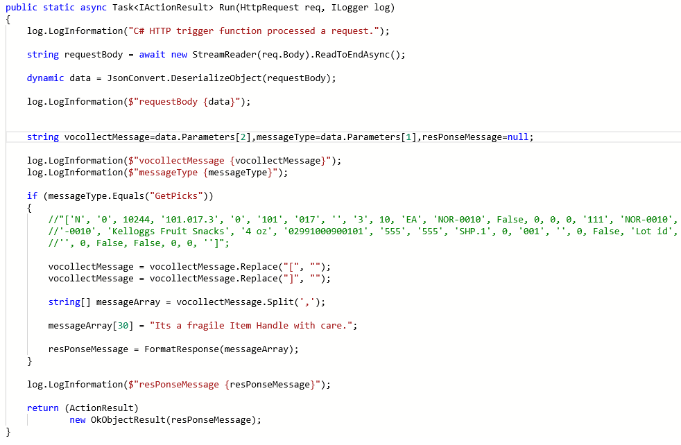

Manhattan Active SCALE Documentation
Exit Points For Customizing The Vocollect Request And Response Messages
The system provides following exit points for customizing the vocollect messages. These exit points are added in VocollectMessagesApi service. Right now this feature is provided only for Manhattan Active SCALE customers.
This one is used to customize the vocollect request message before scale processing it.
This one is used to customize the vocollect response message before sending it from Scale to the vocollect device.
Both the exit points receive following four input parameters.
The following example(Azure function) represents a sample implementation of customizing the vocollect response message before sending it to the vocollect device.
Azure function
